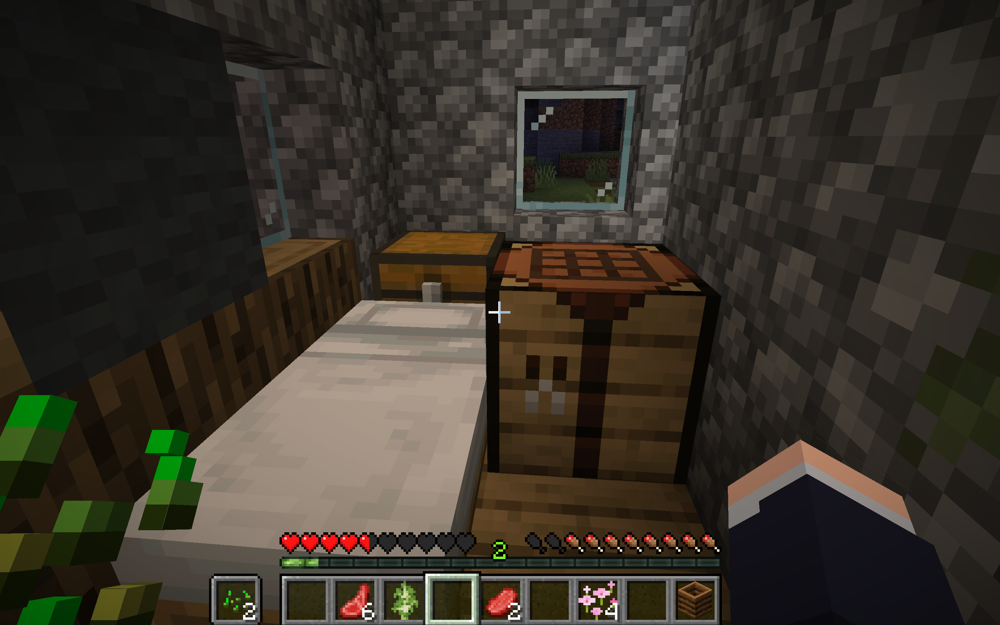
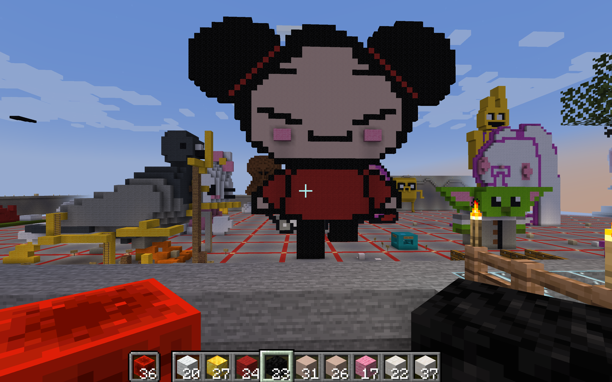

Minecraft Survival Base

I decided to build a little house as my survival base. I added gray stones and tiles, and gray wool for a black wall poster effect. I created a bed, windows, and treasure chests using the crafting table that I made with four planks. Luckily no creepers or other creatures got in so far.
Object of Cultural Significance: Pucca
Before

After

I decided to build Pucca as my significant cultural object because not only I grew up watching the cartoon, but I also discover how it combines Korean and Chinese cultural elements together. Pucca introduces a young girl named Pucca, who helps her three uncles run a Chinese-inspired restaurant. This cartoon educates its audience about the effect of Chinese colonial Korea.